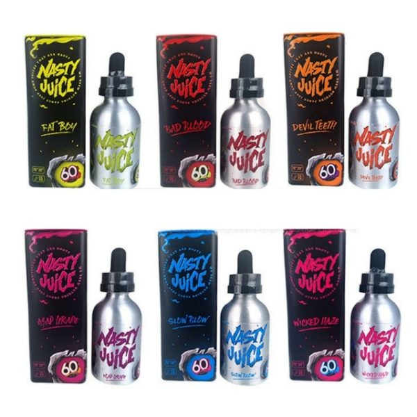
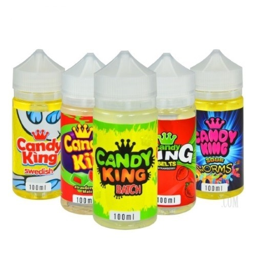

NASTY JUICE
WICKED HAZE
60 ML
En envase sellado de origen.
Esta vez creamos un sabor ampliamente favorecido, una mezcla de grosella negra y limonada que
crea un sabor de exhalación increíblemente extraordinario. La capa de limonada se mezcla
perfectamente sin exagerar, creando una sensación celestial. Pruebe la grosella negra
cuando inhala y la limonada no salobre cuando exhala, definitivamente quedará impresionado
al inhalar por primera vez. Para nosotros, esta combinación es simplemente perfecta.
Perfil de sabor Eliquid: Grosella negra, limonada y menta.
Proporción PG / VG: 30PG / 70VG

Liquido para vaper CANDY KING
100 ml 3 mg
Sabores
Swedish on ice: trae el dulce de goma de mascar en forma de pez favorito de la infancia con un toque de mentol
Batch On Ice: s una confitura de dulces agridulces que presenta una coleccion afrutada de naranja dulce, cereza,
limon y lima acida con una salpicada de cristales de azucar con un toque de mentol
Peachy Ribgs: Un dulce sabor a melocotón confitado que es aromático y audaz, con un dulce y ácido
polvo de azúcar agrio en la exhalación